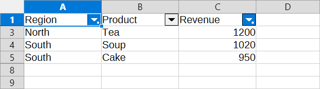

AutoFilter and sorting
A sheet's AutoFilter is LibreOffice's Data ▸ AutoFilter: filter buttons on a range's header row. setAutoFilter can also filter and sort the range, so the file opens filtered and sorted:
using OpenDocumentSpreadsheets
using OpenDocumentSpreadsheets: getAutoFilter
xf = newods("Sales")
sh = xf["Sales"]
sh["A1:C1"] = ["Region" "Product" "Revenue"]
rows = [("North", "Tea", 1200), ("South", "Cake", 950), ("East", "Tea", 1430),
("West", "Soup", 610), ("North", "Cake", 880), ("South", "Soup", 1020)]
for (i, r) in enumerate(rows)
sh[i+1, 1] = r[1]; sh[i+1, 2] = r[2]; sh[i+1, 3] = r[3]
end
setColumnWidth(sh, "A:C"; width = 12)
setAutoFilter(sh, "A1:C7"; filters = ["Region" => ["North", "South"], "Revenue" => (">" => 900)],
sort = "Revenue" => :descending)
getAutoFilter(sh) # CellRange("A1:C7")
setAutoFilter(sh, :; sort = ["Region", "Revenue" => :descending], naturalSort = true)
deleteAutoFilter(sh) # shows every row againFiltering
Rows that don't match are hidden, as LibreOffice's Data ▸ More Filters ▸ Refresh Range hides them:
- Text that LibreOffice reads as a number (
"10","2026-11-23") is compared with numbers by value. - List items are compared as text, so a date matches only at midnight.
- A top or bottom ranking (
(:top, 10)) counts every cell that isn't empty. Text and errors rank above the largest numbers, where they take up places but aren't shown:(:top, 2)overx, 5 and 9 shows only the 9. caseSensitiveandnoDuplicatesare LibreOffice's Case sensitive and No duplications options, and a regular expression (r"^a.*") can be a criterion.
Sorting
Rows are put in LibreOffice's order: numbers (and FALSE, TRUE), then text in LibreOffice's alphabetical order, then errors, with empty cells last.
- Each row's cells move with their formats, validity rules, notes, links and pictures, and a hidden row stays hidden as it moves.
- A formula moves as if copied (
=B5*2moved to row 2 becomes=B2*2), and is saved without a result: LibreOffice calculates it when it opens the file. - Row heights, and formulas elsewhere that refer to the sorted cells, stay as they are.
- The options are
caseSensitive,naturalSort("a2"before"a10") andincludeFormats=false, which moves the values but leaves the formats. - A sort of merged cells (unless
includeFormats=false) or of array formulas is an error.
Not available
LibreOffice can't store these filters, so asking for one is an error that says why: above or below average, and dates relative to today (:today, :Q1, …).